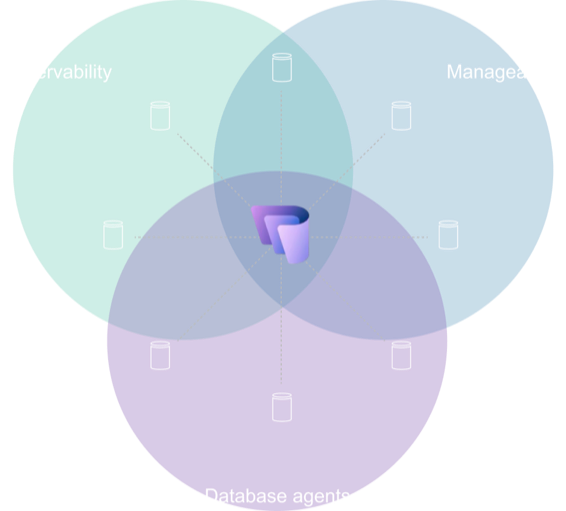

Summary
Database Hub in Fabric brings a fragmented database estate into one intelligent operational experience in Microsoft Fabric, helping teams understand what matters, investigate across engines, and move toward action with agentic assistance.
Public preview launch announcement
Role
Design leader in a player-coach model
- Player
- Vision design, concepts
- Competitive research
- Experience strategy
- Coach
- Growing designers
- Design operations
- Executive buy-in
Customer problem
Enterprise software applications are powered by hundreds or thousands of databases across engines, surfaces and environments for efficient data storage behind the scene.
- Operational databases healthy
- Enterprise application uptime
- Business enabled and running
- $$$
When a service is affected, or needs optimization, understanding where to focus often requires navigating separate tools, correlating telemetry, and reconstructing context before an investigation can even begin. Often, this is too late and the application downtime directly affects customer’s business.
Opportunity: Customers navigate this today through homegrown solutions that need deep expertise, internal development cost, ongoing training and investment for application uptime.
Design highlights
Key challenge was to let users navigate the signal volume and estate complexity to take right actions, quickly
- What needs my attention?
- Why does it matter?
- What should I do next?
- Did it work?
The experience focused on...
The designs built a shared interaction language across three database products to reduced users’ mental model switch.
Users leverage their organizational context to guide AI agents to prioritize signals, identify root cause, recommend fixes and act on them within guardrails.
Users see and act on what they are responsible for. This enhances individual focus, while preserving visibility and access to mitigate enterprise security risk.
Not all signals are same - users need to differentiate between urgent actions and important long-term optimizations.